Sprites do MVP
Todos os sprites do contrato (bíblia §6) em pixel art 1:1, gerados por tools/sprites/build_sprites.py. Primeiro as três cenas de prévia, montadas só com esses PNGs como o jogo vai montar; embaixo cada sprite ampliado, a paleta e as decisões. Nada disso entra no jogo antes da tua aprovação.
- O dono aprovou a v5.1 com a variante A (a recomendada), e os 2 sprites foram promovidos de
_pending/pra pasta oficialassets/sprites/com os mesmos bytes da entrega pendente (md5 conferido):lamp_t2(16×32) eicon_lamp_t2(16×16). O jogo agora carrega eles no lugar do fallbackart.lamp_strong, sem mudar código. - O contrato oficial passou a ter 101 arquivos (99 + 2). Os outros 99 oficiais e o
_future/pod_widenão mudaram (md5 conferido), e a pasta_pending/foi removida, com as candidatas junto. - A variante B (cabeça dupla em T) não foi pro jogo: ficou de histórico em
reports/design/before/lamp_t2_B_v51.png, com a comparação A × B no escuro (before/lamp_t2_AB_dark_v51.png). O desenho dela continua no script (make_lamp_t2("B")). - Âncora, centro do vidro e raio continuam em "v5.1 · Pro Dev integrar (luminária forte)", logo abaixo.
- O dono aprovou a v5.0 inteira, e os 11 sprites foram promovidos de
_pending/pra pasta oficialassets/sprites/com os mesmos bytes da entrega pendente (md5 conferido). O jogo agora carrega eles no lugar do fallback doart.py:- Marco 2 · caverna:
lamp(16×32),icon_lamp(16×16) ecave_ramp_up(96×96); - Marco 3 · destroços:
wreck_cargo(128×112),wreck_module(96×88),wreck_probe(64×64),loot_crateeloot_crate_empty(32×32),icon_blueprint,icon_o2_tankeicon_scanner(16×16).
- Marco 2 · caverna:
- O contrato oficial passou a ter 99 arquivos (88 + 11). Os outros 88 oficiais e o
_future/pod_widenão mudaram (md5 conferido), e a pasta_pending/foi removida. - A luminária forte (
lamp_t2,icon_lamp_t2) ficou pra v5.1, aprovada depois. - Âncoras, colisão, caixa, terminal, chegada da rampa e a luz sugerida da rampa continuam em "v5.0 · Pro Dev integrar".
- O dono aprovou, e os sprites foram promovidos pra
assets/sprites/com os mesmos bytes da entrega pendente (md5 conferido):sand_mist_{0..3}: terra marrom úmida, substitui a areia cinza;sand_green_{0..3}: grama cobrindo o chão, substitui a areia bege com brotos;water_auto_mistewater_auto_green(64×96): autotile de água no layout A2, arquivos novos no contrato.
sand_mistesand_greenestão emreports/design/before/. - O contrato oficial passou a ter 88 arquivos (86 + 2 autotiles). Os outros 78 oficiais e o
_future/pod_widenão mudaram, e a pasta_pending/foi removida. - O algoritmo do autotile está em "Pro Dev integrar".
- O dono aprovou a arte do Marco 1 do v0.3, e ela foi promovida pra pasta oficial
assets/sprites/com os mesmos bytes da entrega pendente (md5 conferido):sand_{dead,mist,green}_{0..3}: chão do deserto (areia, cascalho, ondulação de duna e laje de rocha);rock_small: rocha quebrável de 1 tile;pickup_iron,pickup_siliconepickup_ice: recursos soltos de 16×16;craterecrater_ramp: cratera 3×3, fechada e com rampa.
- Cápsula nova aprovada no tamanho atual: o novo
pod.png(64×72, módulo de fuga pousado) substitui o antigo, que ficou guardado emreports/design/before/pod_v33.png. Contrato e âncora não mudaram, mas os pontos de luz mudaram (veja "Pro Dev integrar"). - Pod largo guardado pro futuro:
assets/sprites/_future/pod_wide.png(96×64). Fica fora do contrato, e o jogo não carrega dessa pasta. Ele aparece só na prévia da superfície Verde, como referência. - O contrato oficial passou a ter 86 arquivos (68 + 18). Os outros 67 oficiais não mudaram (md5 conferido), e a pasta
_pending/foi removida. Como o pod mudou, as prévias da caverna também foram regeradas com a cápsula nova.
- Novo:
assets/sprites/icon_drone.png(16×16). Agora o drone é um item que se fabrica e se coloca na estação, então ganhou ícone próprio. O dono aprovou, e ele foi promovido pra pasta oficial com os mesmos bytes (md5 conferido). O contrato oficial passou a ter 68 arquivos. - Visual: é o mesmo drone do
drone.png, parado: corpo branco com faixa laranja, visor ciano e LED verde, 4 braços com hélices paradas e pezinhos de pouso. Tem contorno#1b1630e segue a família dos outros ícones de item. - Onde ver: ampliado ao lado dos outros ícones de item, logo abaixo das prévias, e dentro do
ui_slotem 1×, 2× e 3× (o tamanho em que o jogo desenha). - Os outros 67 sprites oficiais não mudaram (md5 conferido). A pasta
_pending/foi removida.
- O dono aprovou os 9 sprites do v0.2, e eles foram promovidos pra pasta oficial
assets/sprites/:chestechest_open;solar_panel;drone_stationedrone;icon_chest,icon_solareicon_drone_station;ui_slot.
- O contrato oficial agora tem 67 arquivos (58 + 9). A pasta
_pending/foi removida; o script volta a criá-la só quando houver algo novo pra aprovar. - As âncoras e os pontos de pouso estão na tabela "v0.2 · pro Dev" e não mudaram.
- Novo baú:
chest,chest_openeicon_chestagora são um container de carga industrial: bloco de metal robusto, um pouco mais alto que largo.- Fechado: topo com nervuras e engates de empilhar, cantoneiras reforçadas com rebites e pés. A frente inteira é uma porta corrugada de duas folhas, com faixa laranja tipo stencil, duas barras de trava com alavanca e LED verde.
- Aberto: a folha gira pra esquerda e aparece o interior escuro com 2 prateleiras, pepitas v2.3 e uma caixinha. O LED fica ciano.
- Tamanho e âncora não mudaram: 32×40, blit em
(tx·32, (ty+1)·32 − 40). Os outros pendentes e os 58 oficiais também não mudaram. - O antes × depois do baú está logo abaixo das prévias.
- Assets novos em
assets/sprites/_pending/, que o jogo ainda não usa:- baú fechado e aberto (
chest,chest_open); solar_panel;drone_station, com 2 pads de pouso;drone, com 4 quadros de hélice girando;- os ícones
icon_chest,icon_solareicon_drone_station; - e
ui_slot.
- baú fechado e aberto (
- Os 58 sprites oficiais não mudaram (md5 conferido).
- Prévias: todas ganharam o baú (aberto no Verde) e 3 painéis solares. Na Névoa e no Verde aparecem também:
- a estação de drones com 1 drone pousado;
- 1 drone voando por cima de uma parede, com a sombra caindo no chão;
- 1 drone chegando sobre o chão.
- Minérios num estilo novo, mais amigável: peças chunky e arredondadas, sem cristal fino nem spike. Cores chapadas e saturadas em 2–3 faixas, um brilho claro e contorno
#1b1630(o mesmo do astronauta e da broca), com 2 px na base pra parecer encrustado. As formas diferem por minério: ferro em pepitas gordas cor de cobre, silício em lascas grossas de topo rombudo, gelo em cubos. - Arquivos refeitos:
ore_*(overlay da parede) eicon_*(agora como item coletado, com o silício num toco de rocha escura). - Veios refeitos como placas achatadas encravadas no chão, quase niveladas com o solo. As placas são angulosas, de tamanhos variados, com contorno escuro, 2 px de espessura embaixo, bisel claro e fraturas finas. Pepitas pequenas contornadas ficam por cima e em volta. Ferro tem placas rugosas, silício tem lascas sobrepostas e gelo tem placas lisas de aresta reta. A mancha de terra ficou mais sutil (preto 19%).
- Tamanhos e nomes não mudaram. O antes × depois está logo abaixo das prévias.
- Veios no chão:
vein_iron,vein_siliconevein_ice(64×64, 2×2 tiles). São overlays transparentes: um afloramento de cristais no mesmo idioma dos minérios da parede, em cima de uma mancha de terra remexida com borda orgânica, rachaduras, cascalho e lascas. A mancha é preto translúcido, então funciona sobre o chão dos 3 estágios. - Drill automática:
machine_drill(256×80, 4 quadros de 64×80). Tem uma moldura vazada sobre o veio, a cabeça no estilo das máquinas e um eixo com broca girando enterrada no chão. A caçamba tem um visor onde o jogo pinta o nível. Âncora e retângulo do indicador estão na tabela da seção da drill. - Ícone:
icon_drill(16×16). As prévias ganharam um veio de cada tipo; a drill aparece em cima do veio de silício na Névoa e no Verde (no Morto ela ainda não foi liberada).
- Face da parede refeita (mesmos 32×24): agora são blocos de rocha irregulares com estratos horizontais e fissuras diagonais, sem as juntas verticais que pareciam tábua.
- Regra de desenho nova: o topo da parede sobe pra
y − 24, a face fica emy + 8, e as linhas são desenhadas de cima pra baixo. As prévias mostram um túnel de 1 tile, um pilar isolado e o player meio escondido atrás dele. - Broca nova:
drill_side(96×16),drill_downedrill_up(64×24), com 4 quadros de espiral girando e tremor de 1 px. Offsets e ordem de desenho estão na seção Broca.
- Paredes mais altas: a face foi de 32×12 pra 32×24. Quando o tile de baixo é chão, a parede mostra 8 px do topo da rocha e um paredão de 24 px, com borda clara, estratos, rachas verticais e saliências, escurecendo pra baixo. No verde tem musgo e cipós. A sombra no chão ficou mais longa.
- Astronauta novo, chibi: 32×32, capacete grande com visor escuro e reflexo, traje branco com vermelho e mochila. Tem 3 direções paradas (
player_down/up/side) e 3 caminhadas de 4 quadros (player_walk_*).player.pngeplayer_walk.pngsaíram do contrato. - As prévias foram refeitas com a regra nova. Chão, água, minério, máquinas, pod e plantas não mudaram.
v5.1 · Luminária forte · comum × forte
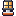
Mesma linguagem da comum aprovada (sapata pesada com faixa laranja #e2733a, poste cinza em faixas, colar escuro, cabeça de gaiola acesa, contorno #1b1630), só que na versão nv.2, como as máquinas: dourado #f2c46d na aba e no aro da cabeça, nos parafusos e num anel do poste. A cabeça cresce de 6×6 pra 10×7 de vidro com 3 painéis e uma aba de refletor mais larga que o vidro; o poste vai de 4 pra 6 px; a sapata ganha um pedestal em 2 degraus e 12 px de largura. O vidro é mais branco-quente (núcleo quase branco, laranja só na borda), pra ler como "luz mais forte" mesmo parado.
v5.1 · No escuro da caverna (halo simulado)
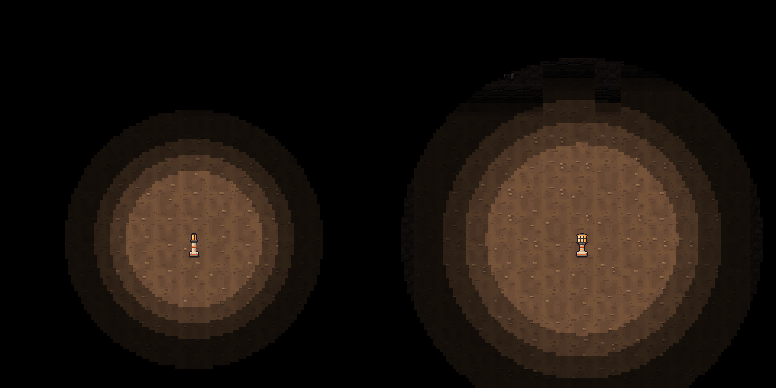
LAMP_COLOR). A forte chega na parede e mostra os minérios; a comum não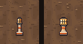
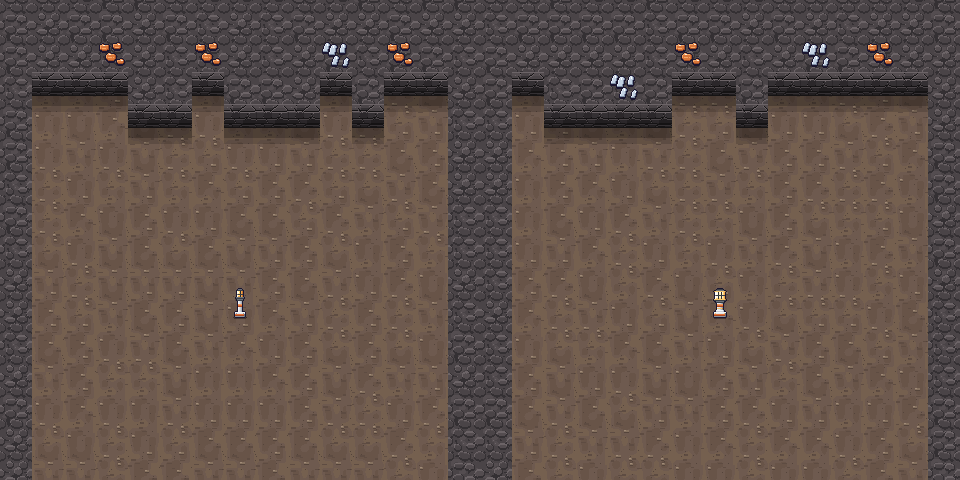
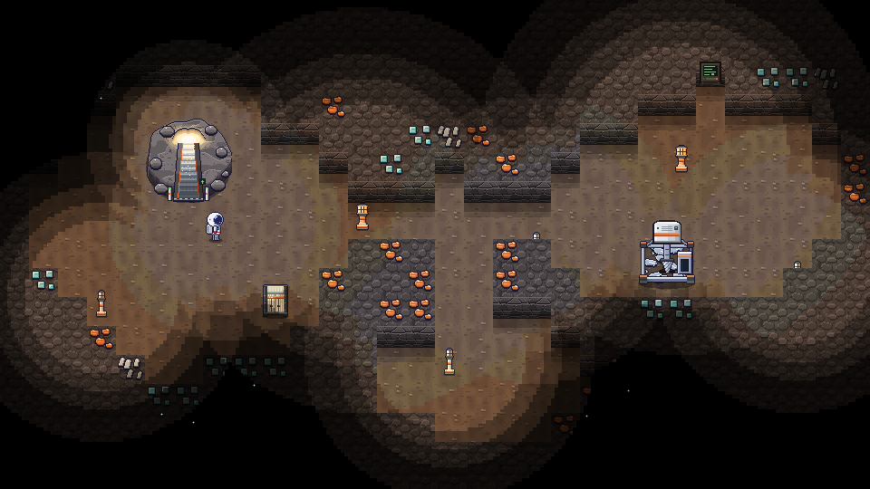
lamp_t2 com raio 7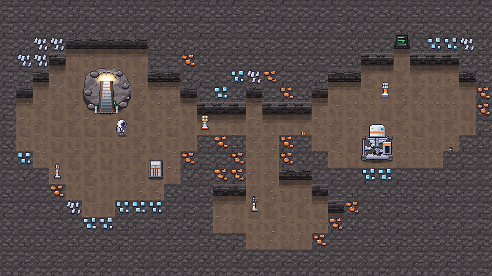
v5.1 · Variantes A × B (o dono escolheu a A)
A (a recomendada, escolhida pelo dono e promovida como lamp_t2.png): a mesma silhueta da comum, só que mais parruda; reconhece como irmã na hora. B: poste mais alto com cruzeta e duas cabeças de gaiola menores (silhueta em T), mais diferente de longe, mas perde o "é a mesma luminária, só que melhor" e cada vidro fica pequeno (5×5). A B ficou de histórico em reports/design/before/ (e no make_lamp_t2("B") do script). A prévia lado a lado no escuro:
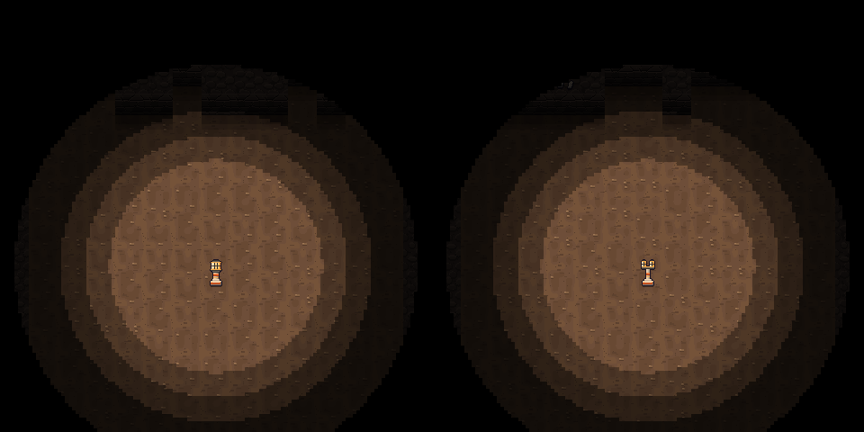
v5.1 · Ícone no slot
icon_lamp (aprovado) e icon_lamp_t2 no ui_slot em 1×, 2× e 3×: cabeça mais larga, vidro mais branco, aba e aro dourados, poste grosso com anel dourado e sapata mais larga.
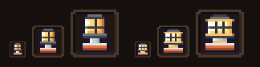
v5.1 · Pro Dev integrar (luminária forte)
| Sprite | Tamanho | Âncora / uso |
|---|---|---|
lamp_t2.png | 16×32 | Drop-in: mesmo tamanho e âncora da lamp.png (C.LAMP_SPRITE_SIZE não muda). Objeto de 1 tile: ax = tx·32 + 16, ay = (ty+1)·32, blit em (ax − 8, ay − 32), ordenado por ay. Base na linha 29 do PNG, sombra já no PNG (um pouco mais larga, 14 px). Pé que bloqueia: o mesmo 12×12 da comum (a sapata tem 12 px). Centro do vidro = (8, 7) do PNG = (ax, ay − 25) no mundo; o lighting.lamp() põe a luz em ay − 24, 1 px abaixo do centro: pode deixar como está. Raio 7 e cor LAMP_COLOR iguais ao que já está no código; a prévia usa exatamente isso. |
icon_lamp_t2.png | 16×16 | Ícone de item (hotbar, inventário, fabricador, aviso de projeto se quiser). Mesmo enquadramento do icon_lamp. |
Aprovado pelo dono e promovido pra assets/sprites/: o render.lamp_surface("lamp_t2") e o ícone já procuram lamp_t2 e icon_lamp_t2, então o jogo troca o fallback art.lamp_strong pelos PNGs sem mudar código. Ordem de desenho igual à da comum (objeto da linha, por ay; a escuridão por cima). Desvios do contrato: nenhum.
v5.0 · Caverna · prévias (960×540, tamanho real)
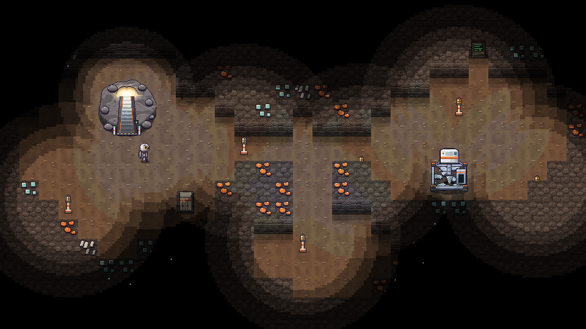
game/lighting.py (células de 4 px, anéis 100/68/40/18%, luzes somadas e multiplicadas): boca de luz da rampa, 6 luminárias, lanterna do capacete, luz fraca da drill e o pontinho dos minérios no escurov5.0 · Rampa de subida × rampa de descida
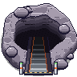
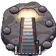
Mesma linguagem da cratera: monte de rocha com uma escada de metal cortada nele, corrimão laranja, soleira com faixa de alerta e duas balizas com LED verde. Só que aqui a escada sobe: os degraus clareiam de baixo pra cima até uma boca de luz no fundo, com a rocha em volta esquentada pela luz do dia, raios pontilhados e poeira no feixe. Uma plaquinha com seta verde pra cima reforça o "sai por aqui". A rocha usa os tons frios da parede da névoa, que é a da caverna.
v5.0 · Marco 2 · luminária
lamp.png16×32 · 8×icon_lamp.png16×16 · 8×Poste baixo da família das máquinas: sapata pesada com faixa laranja #e2733a, poste cinza em faixas, colar escuro e cabeça de gaiola com a lâmpada quente acesa (amarelo claro → laranja, uma barra e um aro de gaiola). Contorno #1b1630.
v5.0 · Destroços · prévias (960×540, tamanho real)
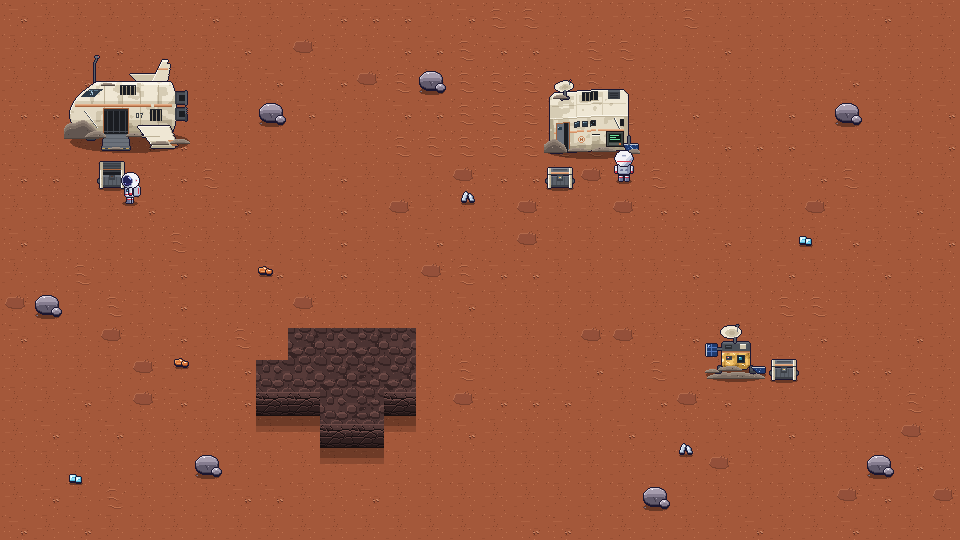
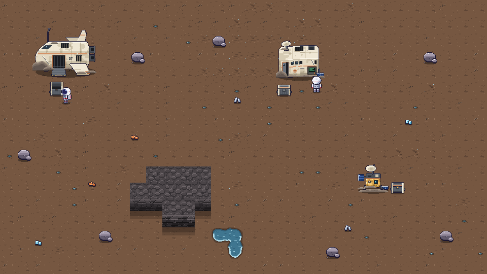
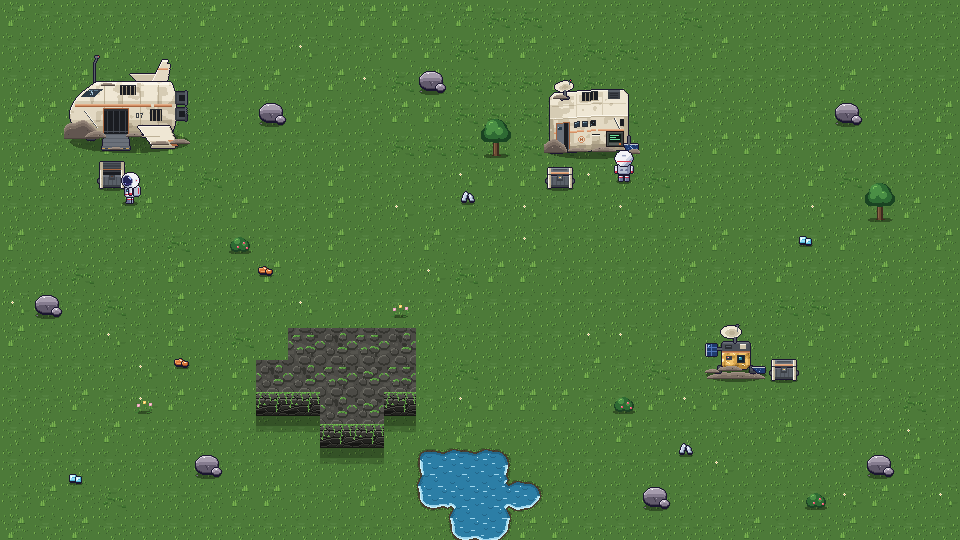
v5.0 · Marco 3 · destroços
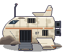
wreck_cargo.png128×112 · 4×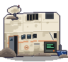
wreck_module.png96×88 · 4×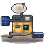
wreck_probe.png64×64 · 4×Escolhas
- Mesma família: painéis creme (os da cápsula), laranja desbotado em vez do
#e2733avivo, metal escuro das máquinas e contorno#1b1630. - Abandono sem drama: placas arrancadas mostrando as costelas, trincas, manchas de fuligem e poeira, vidro quebrado, peças caídas no chão (asa, aleta, painel solar), antenas tortas. Nada de sangue ou corpo.
- Nave de carga (o primeiro grande achado): fuselagem tubular comprida em 3/4, nariz enfiado num monte de areia, cabine trincada, porta de carga caída virando rampa, asa apoiada no chão, deriva e bocais de motor (um partido), registro "07".
- Módulo da colônia: caixa habitável inclinada (o lado esquerdo afundou: as faixas descem em degraus de 1 px), porta emperrada, emblema "H" desbotado da Colônia Hesper e o terminal ainda ligado, no estilo do
terminal.png. - Sonda: pequena e tecnológica, embrulhada em folha dourada amassada (o isolamento das sondas reais), parabólica torta, olho-sensor ciano, LED vermelho ainda aceso e um sulco de impacto.
- Areia acumulada num tom neutro (cinza-amarronzado, a mesma ideia do pedrisco dos veios): um sprite só funciona nos 3 chãos. No Morto lê como poeira, na Névoa some na terra e no Verde vira terra exposta.
v5.0 · Caixa de saque

loot_crate.png32×32 · 6×
loot_crate_empty.png32×32 · 6×cheia ↔ vaziaalternando · 6×Case de carga pesado, diferente do baú do jogador: corpo cinza-chumbo nervurado, cantoneiras creme, tampa com faixa laranja desbotada e alça, alças laterais e trava com LED âmbar ("tem coisa aqui"). Vazia: tampa aberta pra trás, interior escuro e LED apagado.
v5.0 · Ícones de item
icon_blueprint.png16×16 · 8×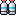
icon_o2_tank.png16×16 · 8×icon_scanner.png16×16 · 8×Projeto = folha de planta azul com o desenho de uma máquina e um chip laranja de contatos dourados. Tanque de O₂ = par de cilindros de mochila com faixa ciano, válvulas laranja e cinta. Scanner = aparelho de mão com tela de minimapa (anéis de radar, ponto do player, alvo), antena e botões. No slot, em 1×, 2× e 3× (os dois últimos são o baú e o ferro aprovados, pra comparar):
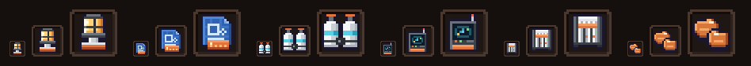
v5.0 · Pro Dev integrar (caverna e destroços)
| Sprite | Tamanho | Âncora · colisão · interação |
|---|---|---|
lamp.png | 16×32 | Objeto de 1 tile, como o baú: ax = tx·32 + 16, ay = (ty+1)·32, blit em (ax − 8, ay − 32), ordenado por ay. A sombra já vem no PNG. Centro da lâmpada = (8, 6) do PNG, ou seja (ax, ay − 26) no mundo. O lighting.lamp() de hoje põe a luz em ty·32 + 8 = ay − 24: fica 2 px abaixo do vidro, dá pra deixar assim ou trocar pra ay − 26. O sprite já vem aceso (vidro quente); a luz em volta é do jogo. |
icon_lamp.png | 16×16 | Ícone de item (hotbar, inventário, fabricador). |
cave_ramp_up.png | 96×96 | Igual à crater_ramp: ocupa 3×3 tiles, blit em (tx·32, ty·32) com (tx, ty) = tile de cima/esquerda, e entra na ordenação com ay = (ty+3)·32. Os cantos são transparentes: desenhe o chão da caverna embaixo. Colisão: os 9 tiles. Alvo do E: tile de baixo do meio (tx+1, ty+2), onde fica a soleira com a faixa de alerta. Ponto de chegada (quem desce da superfície): (tx+1, ty+3), logo na frente da soleira. Luz sugerida: uma LightSource fixa na boca de luz, em (tx·32 + 48, ty·32 + 30), raio ~3,5 tiles, cor (255, 240, 214), intensidade 1, sem flicker. É ela que faz o feixe iluminar a escada e o salão na prévia; sem ela, a rampa fica no escuro como o resto. |
wreck_cargo.png | 128×112 | 4×3 tiles (tx..tx+3, ty..ty+2), centro da base: ax = (tx+2)·32, ay = (ty+3)·32, blit em (ax − 64, ay − 112) = (tx·32, ty·32 − 16). Os 16 px de cima (deriva e antena) sobem pro tile de cima. Colisão: os 12 tiles. Caixa: (tx+1, ty+3), logo na ponta da rampa de carga (fora da área do destroço, então o player chega nela). Sem terminal (se um dia tiver, a porta de carga em (tx+1, ty+2) é o lugar). |
wreck_module.png | 96×88 | 3×2 tiles, centro da base: ax = tx·32 + 48, ay = (ty+2)·32, blit em (ax − 48, ay − 88) = (tx·32, ty·32 − 24). Teto e antena sobem 24 px. Colisão: os 6 tiles. Terminal: desenhado no PNG em (62, 59)–(80, 75), que cai no tile (tx+2, ty+1): é o alvo do E pro LOG (o player lê de (tx+2, ty+2)). O contorno claro de alvo pode ir só nesse retângulo. Caixa: (tx, ty+2), na frente da porta. |
wreck_probe.png | 64×64 | 2×2 tiles, centro da base: ax = (tx+1)·32, ay = (ty+2)·32, blit em (tx·32, ty·32) (não passa da área). Colisão: os 4 tiles. Caixa: (tx+2, ty+1), do lado direito. O LED vermelho da sonda fica em (23, 37) do PNG (se quiser piscar, desenhe 2×1 px apagado #3b3f46 por cima). |
loot_crate.png / loot_crate_empty.png | 32×32 | 1 tile, centro da base: blit em (tx·32, ty·32), ordenado por ay = (ty+1)·32. Obstáculo como o baú. Cheia = tampa fechada com LED âmbar; quando o conteúdo acabar, troque pela vazia (tampa aberta, LED apagado) e a dica vira "vazia". |
icon_blueprint · icon_o2_tank · icon_scanner | 16×16 | Ícones de item. O projeto usa o icon_blueprint no aviso "PROJETO: …"; o tanque vai no slot de equipamento. |
Ordem de desenho
- Caverna: chão (
floor_mist_*) e veios; depois linha por linha: topo da parede em(x, y − 24), minério, face em(x, y + 8), terminal; e os objetos da linha poray(rampa, luminárias, baú, drill, player). Por cima: escuridão → brilho dos minérios → indicadores e HUD. - Superfície: igual à de hoje; destroços e caixas são objetos e entram na ordenação por
ayjunto com rochas, pickups e máquinas. A areia acumulada, a sombra e as peças caídas (asa, aleta) já vêm dentro do PNG do destroço.
Aprovado pelo dono e promovido pra assets/sprites/: o jogo carrega esses PNGs no lugar do fallback do art.py. Desvios do contrato: nenhum (nomes e tamanhos exatamente como na bíblia §9).
v4.1 · Névoa marrom e verde de verdade (aprovado)
A terraformação agora transforma o deserto. A Névoa é terra marrom úmida, com torrões, manchas de umidade, cascalho escuro e manchinhas de lama, ainda sem vegetação: fica no meio do caminho entre o vermelho e o verde. O Verde é grama cobrindo o chão, na família do floor_green que tu gostou: textura densa de folhinhas, tufos altos, zonas de musgo mais escuro e uma florzinha rara. O Morto não mudou.
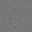
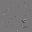
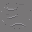
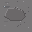

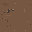
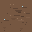
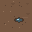
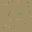

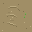

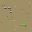

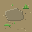
v4.1 · Prévias antes × depois
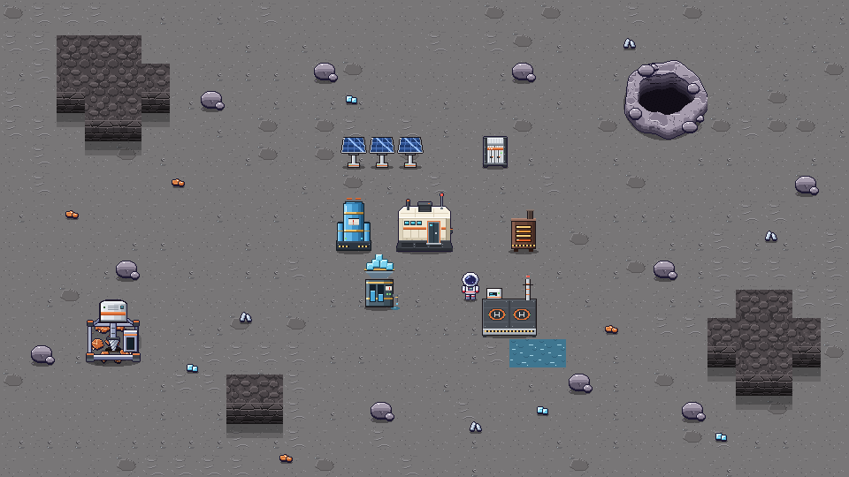
depois (v4.1)
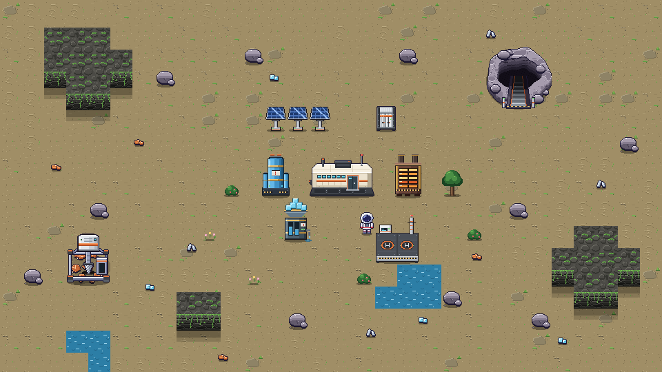
depois (v4.1)
v4.1 · Teste de ladrilho
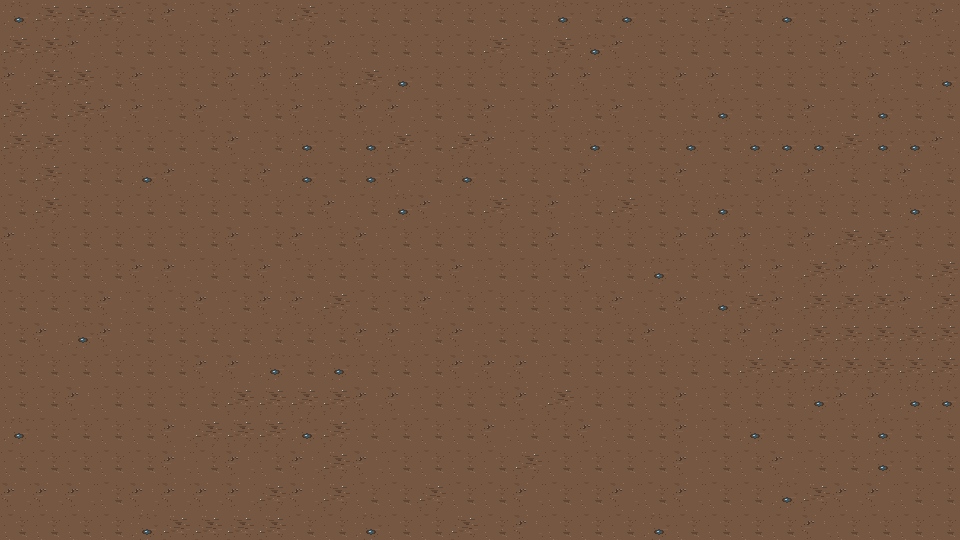
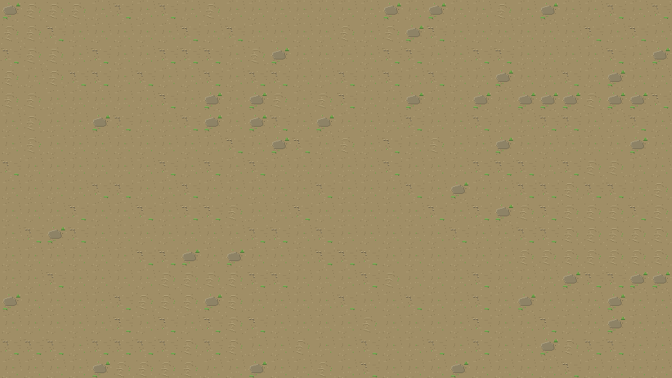
v4.1 · Poças e lagos (autotile de água)
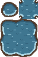
water_auto_mist.png64×96 · 4×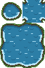
water_auto_green.png64×96 · 4×A borda é orgânica, com uma margem de 2 a 3 px por fora. Na Névoa ela é de lama marrom; no Verde, de terra molhada com grama em volta. A margem de cima faz uma sombra escura na água, e a de baixo e as laterais têm um brilho claro. O interior é o próprio water_{stage} aprovado. Fora da margem o PNG é transparente, então o chão novo aparece por baixo.
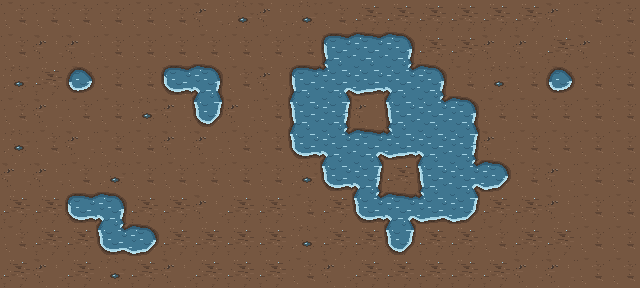
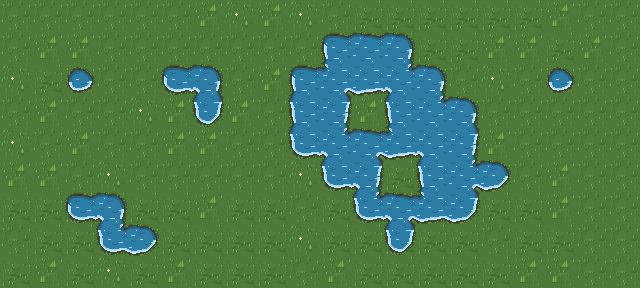
v4.0 · Superfície · prévias (960×540, tamanho real)
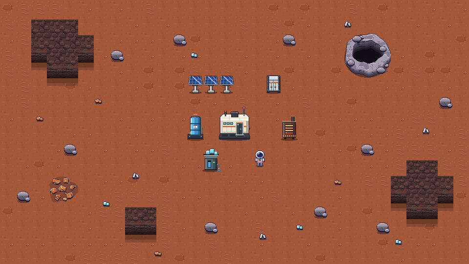
Areia · teste de ladrilho numa área grande
30×17 tiles só de areia, pra conferir se vira papel de parede. A v0 (areia) é quase lisa, só com grão de 1 px e risquinhos de vento. A v1 (cascalho) tem um bolo de pedrisco fora do centro. A v2 (duna) tem ondulações baixas, que juntas em zonas viram as faixas de duna. A v3 (laje) é uma placa de rocha nivelada com o chão, rara. Nada encosta na borda, então não existe costura.
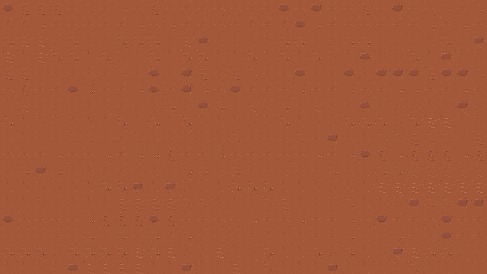
sand_variant)sand_variant)sand_variant)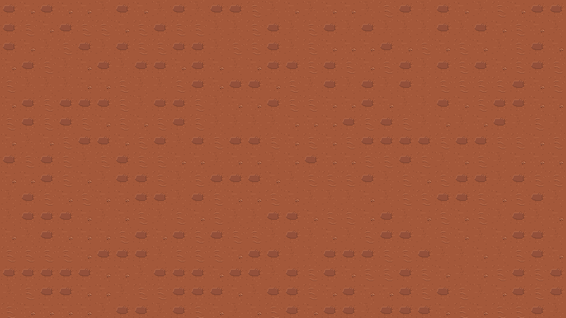
v4.0 · Areia (32×32, 4×)
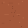
sand_dead_0.png32×32 · 4×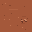
sand_dead_1.png32×32 · 4×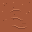
sand_dead_2.png32×32 · 4×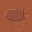
sand_dead_3.png32×32 · 4×sand_mist_0.png32×32 · 4×sand_mist_1.png32×32 · 4×sand_mist_2.png32×32 · 4×sand_mist_3.png32×32 · 4×sand_green_0.png32×32 · 4×sand_green_1.png32×32 · 4×sand_green_2.png32×32 · 4×sand_green_3.png32×32 · 4×v4.0 · Rocha pequena e recursos soltos
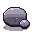
rock_small.png32×32 · 4×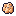
pickup_iron.png16×16 · 8×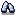
pickup_silicon.png16×16 · 8×pickup_ice.png16×16 · 8×Legibilidade: à esquerda em 1× (como no jogo), à direita em 2×, sobre as 3 areias.
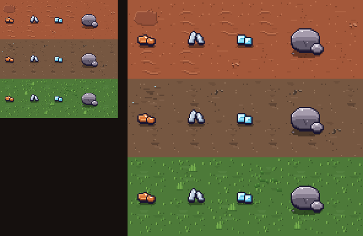
Cratera · fechada × com rampa
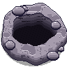
Cápsula · antes × depois × proposta larga

O que aproveitei da referência (só o estilo, desenho original)
- A silhueta de módulo baixo e largo, em caixa de cantos chanfrados: teto com os cantos de trás cortados e frente com duas facetas laterais, que dão o perfil quase hexagonal.
- Painéis creme em placas com junções visíveis, no teto e na frente, no lugar do casco branco liso de antes.
- Uma saia escura grossa que abre pra baixo, com painéis recuados e parafusos, e marquinhas do pouso logo acima. Ela dá a sensação de que o módulo assentou e afundou um pouco na areia.
- Janelinhas retangulares pequenas com luz ciano em fileira, uma escotilha retangular com moldura (aqui laranja, da nossa família) e degrau, uma caixa de equipamento escura com grade e uma aleta no teto, e um toco de asa na lateral.
- Da nossa família, mantive o contorno
#1b1630, a faixa laranja#e2733a, o LED verde, o beacon vermelho na antena e a visão 3/4 (teto visível + frente). Nenhuma forma, proporção ou detalhe foi copiado da nave de referência.
v4.0 · Pro Dev integrar (superfície)
| Sprite | Tamanho | Âncora / uso |
|---|---|---|
water_auto_{mist,green}.png (v4.1) | 64×96 | Autotile no layout A2 do RPG Maker, com minitiles de 16×16. Os blocos são de 32×32: (0,0) = poça isolada (gota de 1 tile); (32,0) = os 4 cantos internos; (0,32)–(64,96) = ilha 2×2 com interior, bordas e cantos externos (grade 4×4 de minitiles: colunas 0/3 = bordas esquerda/direita, 1–2 = meio; linhas 0/3 = bordas de cima/baixo, 1–2 = meio). Algoritmo, por tile de água, olhando os 8 vizinhos (água = sim): sem nenhum vizinho ortogonal, copie o bloco (0,0) inteiro. Senão, pra cada quadrante (qx, qy) ∈ {0,1}², com h = vizinho do lado do quadrante (L se qx=0, R se qx=1), v = vizinho de cima/baixo (U se qy=0, D se qy=1) e diag = o diagonal daquela quina: se h and v and not diag, a fonte é (32 + 16·qx, 16·qy) (canto interno); senão, col = (2 if h else 0) se qx=0 ou (1 if h else 3) se qx=1, row = (2 if v else 0) se qy=0 ou (1 if v else 3) se qy=1, e a fonte é (16·col, 32 + 16·row). Copie 16×16 da fonte pra (16·qx, 16·qy) do tile. A fonte sempre cai no mesmo quadrante do destino (paridade), então a textura da água e as bordas emendam sem costura. Ordem: o chão do tile primeiro, o autotile por cima (fora da margem é transparente). Fora do mapa conta como terra. O código de referência está em autotile_quads() no script. No Morto não tem água. |
sand_{stage}_{v}.png | 32×32 | Chão, igual ao floor_*: blit em (tx·32, ty·32), na passada do chão. Nenhum detalhe encosta na borda, então qualquer variação emenda com qualquer outra e com outro estágio (a mistura de borda da transição continua valendo). Escolha da variação: não use sorteio uniforme. Sugestão (é a das prévias, copie a lógica de sand_variant do script): ruído de baixa frequência pra zonas de duna (v2 em ~55% dos tiles da zona) e de laje (v3 rara), e fora delas v0 ~72%, v1 ~20%, v2 ~5%, v3 ~3%. |
rock_small.png | 32×32 | Objeto de 1 tile, na ordenação por ay: ax = tx·32 + 16, ay = (ty+1)·32, blit em (tx·32, ty·32). A sombra já vem no PNG. O mesmo sprite serve pros 3 estágios. |
pickup_{iron,silicon,ice}.png | 16×16 | Ponto de chão = (8, 14) do PNG (centro da sombrinha). Com o pickup em (x, y) no mundo, blit em (x − 8, y − 14). Ordene com os objetos por y (o player passa na frente e atrás). A sombrinha já vem no PNG (preto 36%, um nível só). |
crater.png / crater_ramp.png | 96×96 | Ocupa 3×3 tiles sem passar da área: blit em (tx·32, ty·32), com (tx, ty) = tile de cima/esquerda. É objeto: entra na ordenação com ay = (ty+3)·32 (assim a borda de trás cobre os pés de quem está logo acima). Colisão sugerida: os 9 tiles sólidos. Na rampa, o alvo do E é o tile de baixo do meio (tx+1, ty+2), onde fica a soleira com faixa de alerta; o player chega/sai em (tx+1, ty+3). A cratera é um sprite só pros 3 estágios (rocha roxo-acinzentada, como a rocha pequena). |
pod.png (novo, aprovado) | 64×72 | Mesmo contrato e mesma âncora de hoje (POD_ANCHOR, centro da base, 2×1 tiles, blit em (ax − 32, ay − 72)). Os pontos de luz mudaram (relativos ao canto sup. esquerdo do PNG): janela ciano (19, 36), beacon vermelho (51, 4), LED verde (31, 41). No render.py o beacon está fixo em (50, 2) e a janela em (20, 29) relativo a (ax − 32, ay − 70); troque pelos valores novos (lembrando do −72 em vez de −70). |
_future/pod_wide.png (guardado) | 96×64 | Não entra no jogo agora (fora do contrato; o jogo não carrega de _future/). Se um dia entrar: colisão sugerida 3×1 tiles (a linha de baixo), o teto e a antena sobem pro tile de cima, como no pod atual. Âncora no centro da base do tile do meio: ax = (tx+1)·32 + 16, ay = (ty+1)·32, blit em (ax − 48, ay − 64). Luzes: janela (36, 32), beacon (76, 0), LED (51, 37), porta (pé) (63, 51). |
Ordem de desenho na superfície
- Chão:
sand_*(e água/poças), depois os veios. - Linhas de cima pra baixo: topo dos morros
wall_{stage}_Nem(x, y − 24), facewall_face_{stage}em(x, y + 8)quando embaixo é chão. Depois os objetos cuja âncora cai na linha, ordenados poray: cratera, rochas, pickups, cápsula, máquinas e player. - Drones voando, partículas e luz por cima de tudo, como hoje.
Os morros e a cordilheira usam a parede já aprovada (wall_*, wall_face_*), sem sprite novo. Faltando qualquer PNG, o fallback do jogo continua valendo.
Prévia das cenas da caverna (960×540, tamanho real · aprovadas, sem mudança)
Ícone do drone no slot do inventário
Imagem em tamanho real (1 pixel da imagem = 1 pixel da tela): ui_slot com o ícone em 1×, 2× e 3×, do jeito que o jogo escala os dois juntos. À direita, o icon_chest aprovado na mesma escala, pra comparar.
A mesma imagem ampliada 3×, pra conferir os pixels:
Baú · antes (v3.0) × depois (v3.1)

Minérios · antes (v2.2) × depois (v2.3)


Astronauta · parado (baixo, cima, lado)
player_down.png32×32 · 6×player_up.png32×32 · 6×player_side.png32×32 · 6×Astronauta · caminhada (4 quadros, animada ao lado)
player_walk_down.png128×32 · 6×player_walk_up.png128×32 · 6×player_walk_side.png128×32 · 6×Chão
floor_dead_0.png32×32 · 4×floor_dead_1.png32×32 · 4×floor_dead_2.png32×32 · 4×floor_dead_3.png32×32 · 4×
floor_mist_0.png32×32 · 4×floor_mist_1.png32×32 · 4×
floor_mist_2.png32×32 · 4×floor_mist_3.png32×32 · 4×floor_green_0.png32×32 · 4×floor_green_1.png32×32 · 4×floor_green_2.png32×32 · 4×floor_green_3.png32×32 · 4×Face alta da parede (nova, 32×24)
wall_face_dead.png32×24 · 8×wall_face_mist.png32×24 · 8×wall_face_green.png32×24 · 8×Parede (topo)
wall_dead_0.png32×32 · 4×wall_dead_1.png32×32 · 4×wall_dead_2.png32×32 · 4×wall_mist_0.png32×32 · 4×wall_mist_1.png32×32 · 4×wall_mist_2.png32×32 · 4×wall_green_0.png32×32 · 4×wall_green_1.png32×32 · 4×wall_green_2.png32×32 · 4×Água
water_dead.png32×32 · 4×water_mist.png32×32 · 4×water_green.png32×32 · 4×Minérios (overlay)
ore_iron.png32×32 · 4×ore_silicon.png32×32 · 4×ore_ice.png32×32 · 4×Veios no chão (2×2, overlay)
vein_iron.png64×64 · 4×vein_silicon.png64×64 · 4×vein_ice.png64×64 · 4×Ícones
icon_iron.png16×16 · 8×icon_silicon.png16×16 · 8×icon_ice.png16×16 · 8×icon_drill.png16×16 · 8×Cápsula e terminal
pod.png64×72 · 4×
terminal.png32×32 · 4×Máquinas nv.1
machine_o2.png40×56 · 4×machine_heater.png40×56 · 4×
machine_melter.png40×56 · 4×Máquinas nv.2
machine_o2_t2.png40×64 · 4×
machine_heater_t2.png40×64 · 4×
machine_melter_t2.png40×64 · 4×Plantas (estágio verde)
plant_bush.png24×18 · 4×plant_tree.png32×40 · 4×plant_flower.png20×14 · 4×Ícone de item do drone (v3.3, ao lado dos outros ícones de item)
icon_drone.png16×16 · 8×icon_drone_station.png16×16 · 8×icon_chest.png16×16 · 8×icon_solar.png16×16 · 8×icon_drill.png16×16 · 8×v0.2 · baú, painel e estação
chest.png32×40 · 4×chest_open.png32×40 · 4×
solar_panel.png32×40 · 4×
drone_station.png64×72 · 4×v0.2 · drone (4 quadros, animado a 15 fps ao lado)
drone.png64×16 · 8×v0.2 · ícones e slot
icon_chest.png16×16 · 8×icon_solar.png16×16 · 8×icon_drone_station.png16×16 · 8×ui_slot.png20×20 · 8×Drill automática (4 quadros, animada a 8 fps ao lado)
machine_drill.png256×80 · 4×Broca (4 quadros, animada a 12 fps ao lado)
drill_side.png96×16 · 8×drill_down.png64×24 · 8×drill_up.png64×24 · 8×v0.2 · pro Dev
| Sprite | Tamanho | Âncora / uso |
|---|---|---|
chest.png / chest_open.png | 32×40 | Centro da base do tile: blit em (tx·32 + 16 − 16, (ty+1)·32 − 40). Os 8 px de cima sobem pro tile de cima. Sombra no rodapé. |
solar_panel.png | 32×40 | Igual ao baú (1 tile, centro da base). Sombra no rodapé. |
drone_station.png | 64×72 | 2×2, centro da base dos 2×2: ax = (tx+1)·32, ay = (ty+2)·32, blit em (ax − 32, ay − 72). A torre de antena sobe 8 px pro tile de cima. |
| Pontos de pouso | 2 | Relativos ao canto sup. esquerdo do PNG da estação: pad 1 = (18, 44), pad 2 = (46, 44). É o centro do drone pousado: blit do quadro do drone em (sx + px − 8, sy + py − 10) (2 px acima do pad, parece pousado sobre os pés). Desenhar logo depois da estação. |
drone.png | 64×16 | 4 quadros de 16×16, recorte (16·f, 0, 16, 16), ~15 fps sempre (pousado pode ficar no quadro 0). Sem sombra no PNG: o jogo desenha uma elipse ~12×5 (preto 36%) no chão, uns 18 px abaixo do centro do drone (altitude). Voando, o drone vai por cima de tudo (depois de paredes e objetos). |
ui_slot.png | 20×20 | Moldura de slot, opaca, com os cantos vazados. O ícone 16×16 entra em (2, 2). |
Drill automática · pro Dev
| Item | Valor |
|---|---|
| Quadro | machine_drill.png: 4 quadros de 64×80 na horizontal; quadro f = recorte (64·f, 0, 64, 80). Tocar a ~8 fps enquanto trabalha; parada (cheia) = quadro 0 fixo. |
| Âncora | Centro da base dos 2×2: ax = (vx + 1)·32, ay = (vy + 2)·32, com (vx, vy) = tile de cima/esquerda do veio. Blit em (ax − 32, ay − 80). Os 64×64 de baixo do quadro casam com os 2×2; os 16 px de cima são a cabeça, que sobe pro tile de cima. |
| Indicador de nível | Retângulo (x, y, w, h) = (48, 47, 7, 12) dentro do quadro. Encher de baixo pra cima: altura = round(h · conteúdo/20), desenhar em (x, y + h − altura, w, altura) com a cor do minério (ferro #e8a066, silício #c3d1e2, gelo #a6ecff). Vazio já vem pintado de azul-escuro no PNG. |
| Ordem de desenho | O veio é chão: desenha junto com o chão, antes de paredes e objetos, em (vx·32, vy·32). A drill é objeto: entra na ordenação por ay com o resto. O veio continua visível pela moldura vazada. |
Broca · encaixe na mão
Offsets pro Dev
| Direção | Sprite (quadro) | Offset do blit (x, y) | Ordem |
|---|---|---|---|
| side | drill_side.png (24×16) | (12, 13) | depois do player (fica na frente) |
| down | drill_down.png (16×24) | (13, 16) | depois do player (fica na frente) |
| up | drill_up.png (16×24) | (20, 4) | antes do player (fica atrás) |
- O offset é medido a partir do canto superior esquerdo do quadro do player (32×32):
broca = (px + dx, py + dy). - Lado espelhado (pra esquerda): espelhe a broca também e use
dx' = 32 − dx − 24, que dá-4; odynão muda. - O quadro da broca é independente do quadro do player. Toque os 4 quadros em loop a ~12–15 fps enquanto o botão estiver pressionado. O tremor de 1 px já está nos quadros.
- A ponta de
drill_downpassa 16 px pra baixo do quadro do player e a dedrill_sidepassa 4 px pra direita: é de propósito, ela entra no tile que está sendo minerado. Faíscas e lascas são do jogo.
Paleta usada
Extraída dos PNGs gerados (cores opacas, da mais escura pra mais clara). A base é a paleta da bíblia §3 e os tons auxiliares do mockup; a sombra no chão é preto a 36%.
Tiles · morto 19 cores
#180f10#241717#2f1f1f#352323#57291c#5c2d1f#4b3332#563a38#6a3424#743b29#7b402c#2f5a70#814430#6e4b47#3d6f86#94553b#b0704f#9fcfe0#b8e2ee
Tiles · névoa 21 cores
#151314#211e20#2b272a#343033#3e2f25#4a382c#4a4447#54443b#5e4535#544d50#5e4c42#315f78#685448#6e5a4f#75604f#6c6467#3f7690#85715f#a08b78#a3d2e3#b8e2ee
Tiles · verde 25 cores
#151513#22221f#2c2c28#3b3326#353530#4a4030#4b4a45#3a5f2c#55544e#22668a#426b31#3f7230#477235#4d7a39#2c7ea6#6d6c64#548140#5e9640#5c9a43#7a8a6a#79b04f#7cba58#9aa88a#9ed6ee#c8eef8
Minérios, veios e ícones 77 cores
#0d1a2a#1b1630#2a2d33#332e40#2f3338#1f3a6e#3b3f46#4a3f3a#4a4458#1f5a66#24508f#4a4f57#94461f#2f62b3#555d72#615a72#a8471f#9e4c24#6b5d55#2b7f99#a8552b#3f74c4#6b717a#4f74b8#6a7194#6f7f99#8a7b70#4f86d6#2b9fb8#c9693a#c9742f#3f9fc6#ff5a4a#7d8ca3#d9763a#e2733a#b8893a#8c949e#8b94a8#4fb3d6#7fa8e0#9aa2bf#f29a62#59d0e6#f0a062#abb2bb#7fd67a#aab3c2#f2a64a#a9b8cf#f4a868#9cc2f0#9fc4f5#bcc4d2#f2c46d#8fe0f8#c8cdd4#c3d1e2#ffd27a#d3d8e6#ffd0a0#cfe6ff#dfe5ee#e1e5ea#ffe9a8#e3ebf5#cdf6ff#d2f7ff#fff0bf#d8fbff#fff3c4#fff1dc#f4f4f8#f2f5fa#f4f6f8#fffbe8#ffffff
Astronauta e broca 27 cores
#151638#1b1630#232457#3b2f78#353a5a#3b3f46#97213a#555d72#5a6069#d9384a#6a7194#e2733a#878fac#8b94a8#9aa2bf#f29a62#59d0e6#7fd67a#9fb2ff#b9bfd1#bcc4d2#f2c46d#d3d8e6#d6ffd0#f4f4f8#f2f5fa#ffffff
Cápsula, máquinas e terminal 111 cores
#120d0f#140f0d#1d0f0b#0d1a15#1a1418#151a20#1b1630#2a1712#14202b#16291f#2a201c#22262c#202730#232d34#2a2e2c#2a2d33#22303a#1f3140#1b3448#2b3440#462c24#2b3740#3a3f3c#4a3a34#3b3f46#34444f#4a3f3a#5a3a2f#1d4f66#2a4c66#3d4856#1f5379#2f5a2c#3e4f5a#5e4a26#4a4f57#6a4538#4e5551#c2281c#4a5f6d#555d72#5a605c#6b5a52#4f6370#5a6069#a8471f#2d70a0#3d6f86#2b7f99#8a6050#6b717a#6a7194#64798a#9a7060#8a7a72#3f91c6#e0602a#6f8696#ff5a4a#e2733a#b8893a#4aa8d8#9c917a#8c949e#8b94a8#8a96a3#b58a78#4fb3d6#8aa2b2#6fb4d0#9aa2bf#64b7e8#b5aa91#ff9a3d#f29a62#59d0e6#abb2bb#7fd67a#6fc9ef#b9b2a8#6fe3a0#7fd3ef#c9bea6#bcc4d2#f2c46d#d4c9b1#9ad9f7#c8cdd4#9fe0f5#ddd3bc#ddd3bd#d9d3c8#ffd27a#d3d8e6#a6ecff#ffd0c8#ece3cf#e1e5ea#e9e5dd#d4f1ff#d6ffd0#fff0c0#eef1f4#d8fbff#f7f1e2#fff3c4#f4f4f8#f2f5fa#f4f6f8#effdff#ffffff
Plantas 18 cores
#3d2a1e#1a4322#1d4224#6b4a33#2e6a33#2f6a33#3f7a34#8a6446#4a8f45#5c9a43#e94f6a#c97a9a#c99a3a#7cc45e#ff9aa8#f2a3c8#f5d36b#fff3c4
v0.2 · baú, painel, estação, drone, ícones e slot 50 cores
#120d0b#14161b#1a1418#1e1714#1b1630#1a1c22#14202b#2c211c#262a32#2a2d33#2f3338#1f3a6e#4a382f#3b3f46#2f5a2c#2a4f8f#4a4f57#575d66#a8471f#9e4c24#2b7f99#6b717a#4f74b8#ff5a4a#7d8ca3#d9763a#e2733a#8c949e#6e98dc#4fb3d6#f29a62#59d0e6#abb2bb#7fd67a#aab3c2#f4a868#9fc4f5#f2c46d#ffb3a8#c8cdd4#dfe5ee#e1e5ea#e3ebf5#cdf6ff#d6ffd0#d8fbff#eef2f8#fff1dc#f4f6f8#ffffff
v0.3 · areia 35 cores
#463830#4a382c#523c2e#6c3626#5a4232#5e4535#3a5f2c#36632a#7a412e#3f5a64#6c4f3b#86452c#3f6a30#874630#3f7230#765741#477235#94503a#985034#4d7a39#80604a#a4583a#548140#af6343#927259#5e9640#8f7865#b46b4c#5c9a43#bf7350#79b04f#c98563#a3d2e3#f2c46d#f4ecd2
v0.3 · rocha, pickups, cratera e cápsula 75 cores
#0b0810#120e18#141519#1b1630#1d1f24#221d2b#22262c#2a2d33#22303a#322c3c#3e2f25#3b3326#5a2a14#4a382c#3b3f46#34444f#4a4030#453e50#463f51#7a3a1c#5e4535#3a5f2c#4a4f57#4f545c#315f78#22668a#5a5264#4a5f6d#625a6c#5a6069#a8471f#9e4c24#3f7690#2b7f99#2c7ea6#6b717a#5e9640#867c8f#ff5a4a#7d8ca3#d9763a#e2733a#9c917a#8c949e#4fb3d6#a69cad#b5aa91#f29a62#59d0e6#abb2bb#7fd67a#f4a868#c9bea6#a3d2e3#f2c46d#9ed6ee#d4c9b1#8fe0f8#c8cdd4#c3d1e2#ddd3bc#ddd3bd#d8d0dc#b8e2ee#ffd0c8#ece3cf#c8eef8#e3ebf5#cdf6ff#d6ffd0#d8fbff#f7f1e2#fff1dc#f4f6f8#ffffff
v0.3 · caverna e destroços (v5.0) 107 cores
#0d1a15#1a1418#0d1a2a#1b1630#1a1c21#14202b#1d2a22#2b272a#2a2d33#363134#2a3a48#3a3538#1f3a6e#3c3639#3a3f3c#3b3f46#6e2f14#5a3a2a#484245#4d433e#1f5a66#24508f#4f484b#504a4d#4a4f57#4e5551#5d5659#625650#2f62b3#5a605c#635c5f#5a6069#a8471f#686164#6e6359#8a6428#2b7f99#3f74c4#796b61#6b717a#4f74b8#5d7a8c#7a7275#a8663f#4f86d6#2b9fb8#857d80#8c7f74#7c838c#8e7f73#c9742f#ff5a4a#e2733a#b8893a#958d90#9c917a#8c949e#a39385#a39780#d39065#ac9d8d#7fa8e0#c9a050#aca4a7#c9a070#b3a78d#d9a64e#f29a62#59d0e6#abb2bb#7fd67a#bdb197#f2a64a#6fe3a0#e6b08a#9cc2f0#9fc4f5#c9bea6#a8c8d8#ffb84a#d2c2ad#cfc4ab#e8c088#f2c46d#d6ccb4#c8cdd4#ffd27a#e3d9c3#ffd0c8#f8dca0#e1e2df#cfe6ff#ffe2a0#e1e5ea#efe7d4#ffe9a8#f4ecd8#d6ffd0#fff0c8#d8fbff#fff3c4#fff3dc#f4f6f8#fbf7ec#fffbe8#fffaf0#ffffff
v0.3 · luminária forte (v5.1) 19 cores
#1b1630#2a2d33#3b3f46#a8471f#6b717a#e2733a#b8893a#8c949e#f29a62#abb2bb#f2a64a#f2c46d#c8cdd4#ffd27a#e1e5ea#fff0bf#f4f6f8#fffbe8#ffffff
Decisões de design
Escolhas
- Tiles sem costura. Chão e água usam ruído periódico de 32 px. Os pontos da borda são iguais em todas as variações do mesmo estágio, então qualquer variação encosta em qualquer outra sem emenda. As pedras da parede ficam dentro do tile (1 px de folga) sobre um fundo granulado que também emenda.
- Paredes altas (v2.1). A face de 32×24 agora é feita de blocos de rocha irregulares e achatados, em três ou quatro estratos horizontais quebrados, com fissuras diagonais. Cada bloco tem luz no topo e uma junta escura embaixo, e o tom escurece em faixas até o pé, usando as mesmas cores do topo da rocha do estágio. Não existe junta vertical regular, que era o que fazia parecer tábua de cerca. No verde, o musgo na borda e os cipós continuam. Com o topo elevado (y−24), o maciço fica com 56 px de altura visível.
- Minério. Cada minério tem uma silhueta própria, além da cor: ferro em pepitas gordas, silício em lascas grossas, gelo em cubos. Dá pra distinguir até em tela pequena ou pra quem tem daltonismo. O contorno #1b1630 é o mesmo do astronauta, da broca e da drill, então o minério conversa com eles. Numa parede com face, o overlay de 32×32 cai por cima da faixa de topo e da face, então os cristais aparecem brotando do paredão.
- Astronauta chibi (v2). Personagem original no estilo das referências, sem copiar nenhuma. O capacete ocupa metade da altura, com visor azul-marinho, meia-lua roxa na base e reflexo claro em curva. Traje branco sombreado em cinza-azulado, luvas, cinto e faixa no joelho vermelhos, painel no peito e mochila (atrás dos ombros de frente, grande de costas e de lado). Contorno #1b1630 em todas as peças, então ele lê bem a 1×. A caminhada segue contato, passagem (corpo sobe 1 px), contato invertido e passagem, com braço balançando. Rodar a 8–10 fps.
- Máquinas nv.2. Mesma família das nv.1 (mesmas cores e faixas de cilindro), só que mais largas e altas, com anéis e frisos dourados (#f2c46d) e peças duplicadas: dois bocais no O₂, duas chaminés e cinco fendas no aquecedor, funil maior com dois visores no derretedor.
- Sombras. Pod, máquinas e plantas já trazem a sombra no rodapé do PNG, em preto com 36% de opacidade (um nível só, sem degradê). O player não tem sombra no PNG: o jogo desenha uma elipse de ~16×5 nos pés.
- Luz e animação. Brilhos, partículas, piscadas e luz ficam por conta do jogo (são cosméticos no MVP). Os sprites vêm no estado 'ligado': luz verde acesa, fendas do aquecedor brilhando.
Pro Dev integrar
- Âncora dos objetos (pod, máquinas, plantas, terminal): centro da base do PNG. Blit em
(ax − w/2, ay − h), comax= centro do tile eay= borda de baixo do tile ocupado. O pod tem 64 px e ocupa 2 tiles:ax= linha entre os dois tiles. - Máquinas: nv.1 sempre 40×56, nv.2 sempre 40×64 (canvas fixo, a máquina centralizada). Assim a âncora não muda quando faz upgrade.
- Regra de desenho v2.1, no estilo Core Keeper: (1) todo o chão e a água primeiro. (2) Depois, linha por linha de cima pra baixo: pra cada parede da linha, o topo
wall_{stage}_Nem(x, y − 24)e o overlay de minério no mesmo lugar; se o tile de baixo não for parede,wall_face_{stage}em(x, y + 8); e o terminal em(x, y). Em seguida, os objetos e o player cuja âncora cai nessa linha. Assim o topo da parede da linha de baixo cobre os pés de quem está logo acima, como na prévia com o pilar. - Túnel de 1 tile: na vertical fica bonito (prévias). Na horizontal, o topo elevado da parede de baixo cobre 24 dos 32 px do corredor; é o comportamento normal do Core Keeper, mas fica avisado.
- Sombra no chão logo abaixo de uma face (usada nas prévias): retângulo preto 32×10 com alpha 84 e mais 32×6 com alpha 40 logo abaixo.
- Player: quadros de 32×32 com os pés na linha 30 (a 31 é o contorno da bota). Blit em
(ax − 16, ay − 32).sideolha pra direita; espelhe pra esquerda. Caminhadas: 4 quadros de 32×32 na horizontal. - Carregar com
convert_alpha(). Nada desmoothscale: escala inteira só no final, na janela.
Desvios do contrato: nenhum. Nomes e tamanhos exatamente como na bíblia; nos itens "até", usei o máximo (máquinas 40×56 e 40×64) e plantas menores (arbusto 24×18, árvore 32×40, flor 20×14).